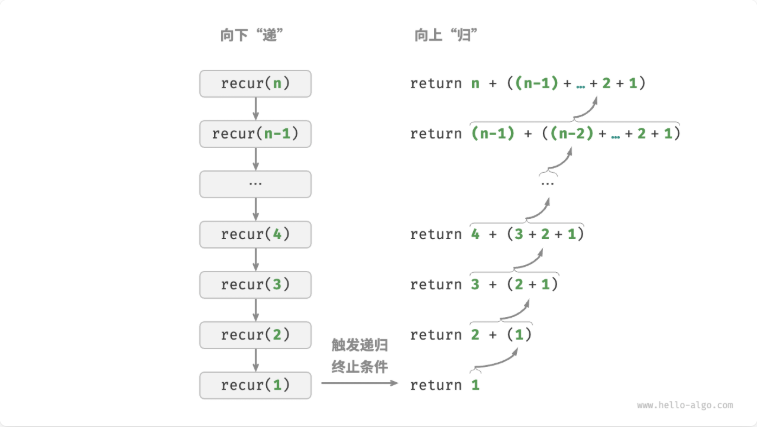
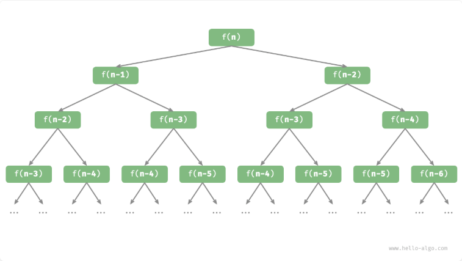

在算法中，重复执行某个任务是很常见的，它与复杂度分析息息相关。常见的重复执行有迭代和递归，这两者也经常被搞混
迭代
迭代是在满足一定的条件下重复执行某段代码，直到这个条件不再满足，一般有以下几种：
- for 循环
- while 循环
- 嵌套循环
递归
递归（recursion）是一种算法策略，通过函数调用自身来解决问题。它主要包含两个阶段。
- 递：程序不断深入地调用自身，通常传入更小或更简化的参数，直到达到 “终止条件”。
- 归：触发 “终止条件” 后，程序从最深层的递归函数开始逐层返回，汇聚每一层的结果。
而从实现的角度看，递归代码主要包含三个要素。
- 终止条件：用于决定什么时候由 “递” 转 “归”。
- 递归调用：对应 “递”，函数调用自身，通常输入更小或更简化的参数。
- 返回结果：对应 “归”，将当前递归层级的结果返回至上一层。

调用栈
递归函数每次调用自身时，系统都会为新开启的函数分配内存，以存储局部变量、调用地址和其他信息等。这将导致两方面的结果：
- 函数的上下文数据都存储在称为 “栈帧空间” 的内存区域中，直至函数返回后才会被释放。因此，递归通常比迭代更加耗费内存空间。
- 递归调用函数会产生额外的开销。因此递归通常比循环的时间效率更低。
在实际中，编程语言允许的递归深度通常是有限的，过深的递归可能导致栈溢出错误。
尾递归
如果函数在返回前的最后一步才进行递归调用，则该函数可以被编译器或解释器优化，使其在空间效率上与迭代相当。这种情况被称为尾递归（tail recursion）。
为什么尾递归可以优化？因为尾递归中，递归调用是函数返回前的最后一个操作，这意味着函数返回到上一层级后，无须继续执行其他操作，因此系统无须保存上一层函数的上下文。
递归树
当处理与“分治”相关的算法问题时，递归往往比迭代的思路更加直观、代码更加易读。
思考实现一个斐波那契数列的计算，数列中的每个数字是前两个数字的和，即 \(f(n) = f(n - 1) + f(n - 2)\) ，C++ 函数实现如下：
1 | /* 斐波那契数列：递归 */ |
我们在函数内递归调用了两个函数，这意味着从一个调用产生了两个调用分支。这样不断递归调用下去，最终将产生一棵层数为 n 的递归树（recursion tree）。

从本质上看，递归体现了 “将问题分解为更小子问题” 的思维范式，这种分治策略至关重要。
- 从算法角度看，搜索、排序、回溯、分治、动态规划等许多重要算法策略直接或间接地应用了这种思维方式。
- 从数据结构角度看，递归天然适合处理链表、树和图的相关问题，因为它们非常适合用分治思想进行分析。
两者对比
| 迭代 | 递归 | |
|---|---|---|
| 实现方式 | 循环结构 | 函数调用自身 |
| 时间效率 | 效率通常较高，无函数调用开销 | 每次函数调用都会产生开销 |
| 内存使用 | 通常使用固定大小的内存空间 | 累积函数调用可能使用大量的栈帧空间 |
| 适用问题 | 适用于简单循环任务，代码直观、可读性好 | 适用于子问题分解，如树、图、分治、回溯等，代码结构简洁、清晰 |